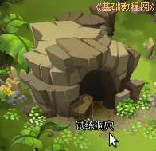
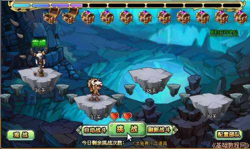
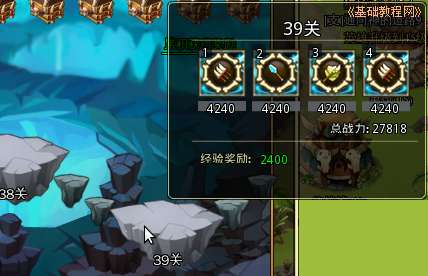
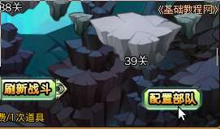
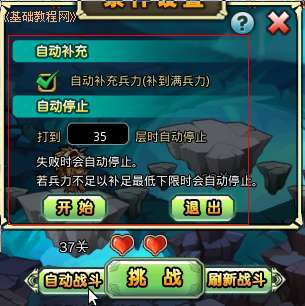
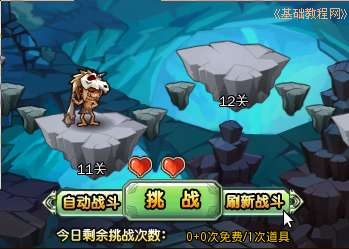
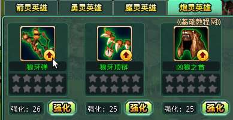
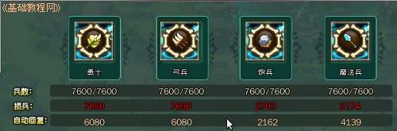

塔防游戏部落守卫战新手攻略
作者：TeliuTe 来源：基础教程网
十一、试炼洞穴 返回目录 下一课试炼洞穴可以获得声望和英雄经验，每个整20关还可以得一个装备；
1、试炼洞穴
1）在左侧找到试炼洞穴按钮，点击进入；

2）进入洞穴后，点击下边的“挑战”，即可开始闯关；

3）把鼠标移到每一关的小人上，可以查看防守敌人的排兵阵形；

4）点击右下角的“配置部队”，可以补充兵力、根据相克调整队形；

5）点击“自动挑战”可以设定自动挑战到某一关停止，或者到兵力耗尽挑战失败时自动停止；

6）每天有两次挑战机会，在20关可以获得凶狼印记，
若不想再往下，可在配置部队中，只派一个兵挑战失败后，再次进入获得另一个印记；

7）获得印记后，点击中间的“工坊”，在英雄装备图标里面，会出现一个小箭头，点击即可升级，
注意需要大量骨片，在25级前升级比较好；

8）挑战完后损失兵力可恢复80%，因此可以尽量往高的层挑战；

本节学习了试炼洞穴的基础知识，如果你成功地完成了练习，请继续学习下一课内容；
本教程由86团学校TeliuTe制作|著作权所有
基础教程网：http://teliute.org/
美丽的校园……
转载和引用本站内容，请保留版权信息和本站链接。